> blog_
Notes from measuring Neper.
We hold the language to its claims with numbers from real sessions, including the columns where it loses.
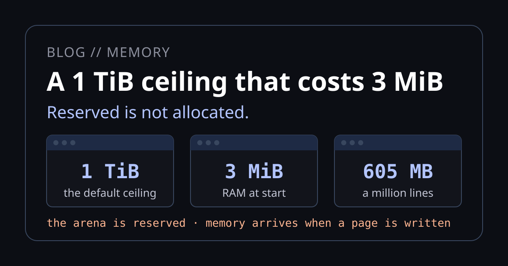
A 1 TiB ceiling that costs 3 MiB A program now takes the memory it needs with no flag, gives it back, and can free one object with use-after-free refused at compile time. Windows, Linux and macOS, measured, with how it compares to Go, Rust, C++ and Node. Read the post →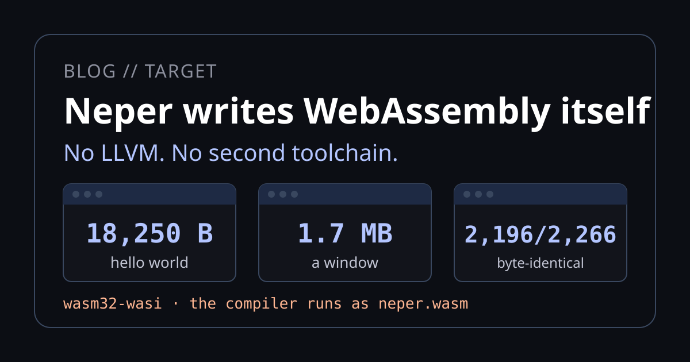
Neper writes WebAssembly itself The same compiler that writes PE, ELF and Mach-O writes wasm32-wasi: an 18 KB hello world, a 1.7 MB window, the compiler itself running as WebAssembly, and a phone keyboard in a canvas. Measured, with the limits listed. Read the post →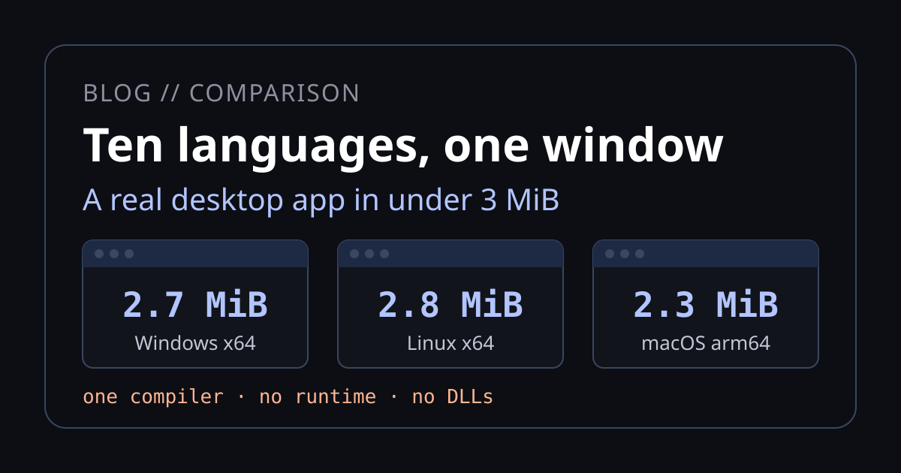
Ten languages, one window: what you install One compiler builds Windows and Linux desktop programs from one machine, the user installs nothing to run them, and the window is 2.7 MiB. Set against the install guides of ten popular desktop languages, with the limits listed. Read the post →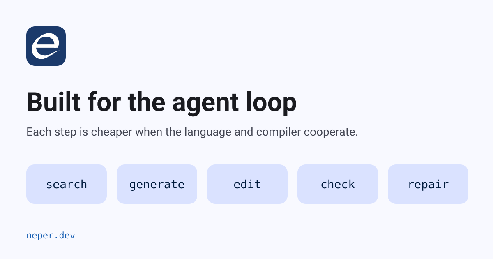
Why Neper is built for the agent loop Search, generate, edit, check, repair: what each step costs a model, and the language rules, JSONL commands and diagnostics that make each one cheaper, including the claims we have not yet proved. Read the post →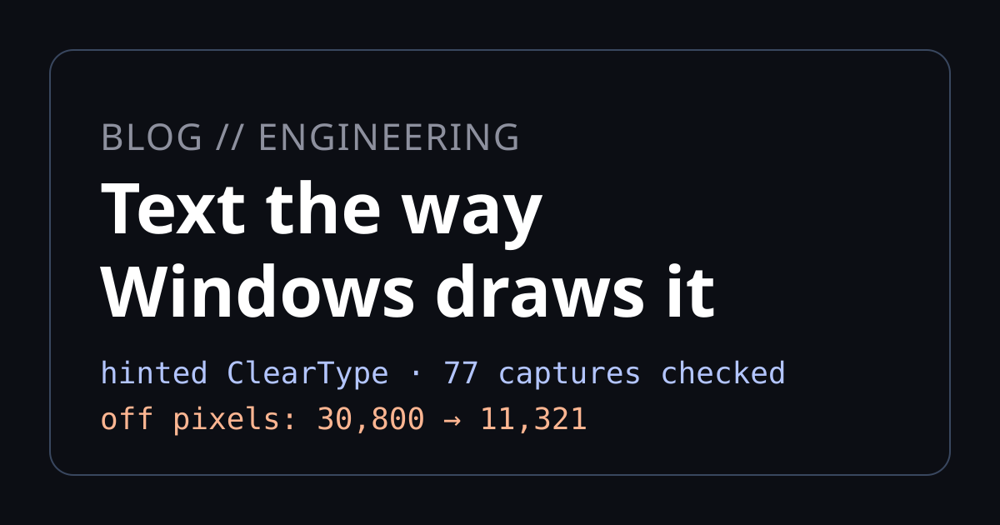
Text the way Windows draws it: ClearType in Neper Neper's Windows look now draws hinted ClearType text, with its own TrueType bytecode interpreter and a GDI-style rasteriser. Against 77 native Windows captures the off pixels fell from 30,800 to 11,321. It is not pixel-exact yet, and the post says by how much. Read the post →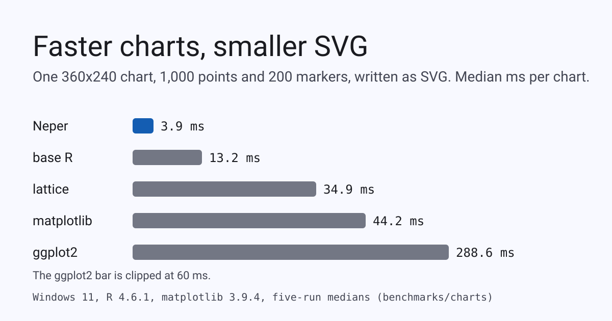
Faster charts, smaller SVG, and what we are doing about PNG size The same chart drawn by Neper, base R, lattice, ggplot2 and matplotlib: 3.4 to 73 times faster as SVG, 2 to 24 times faster as PNG, SVG 28 to 32 percent smaller. Neper's PNG is three times larger than R's, and the post says why, what we measured, and the lossy step that cuts it by 47 percent. Read the post →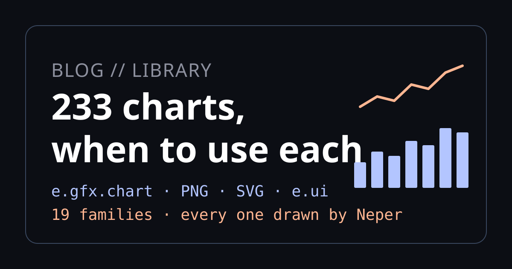
234 charts, and when to use each A field guide to every chart Neper draws, from bars and box plots to Laney control charts, Kaplan-Meier curves, Sankeys and Nyquist plots: the question each one answers, when to reach for another, and how fast it is against matplotlib. Read the post →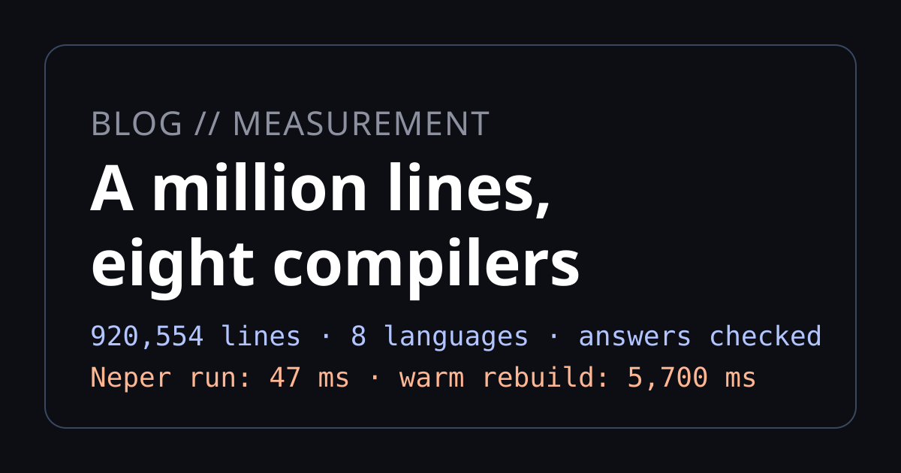
A million lines, eight compilers Neper's sc1m scale program ported to seven languages with checked answers. Neper's binary runs it in 47 ms from 2.73 MiB, Dart compiles it fastest cold — and Zig 0.16 never finishes. Read the post →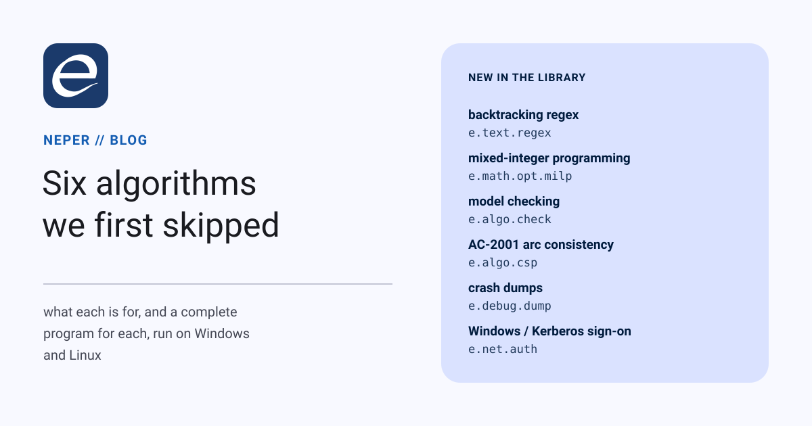
Six algorithms we first skipped A backtracking regex engine with a step budget, mixed-integer programming by branch and cut, model checking that returns the shortest counterexample, AC-2001, crash dumps from both operating systems, and sign-on as the user who is already signed in: what each is for, and a program for each. Read the post →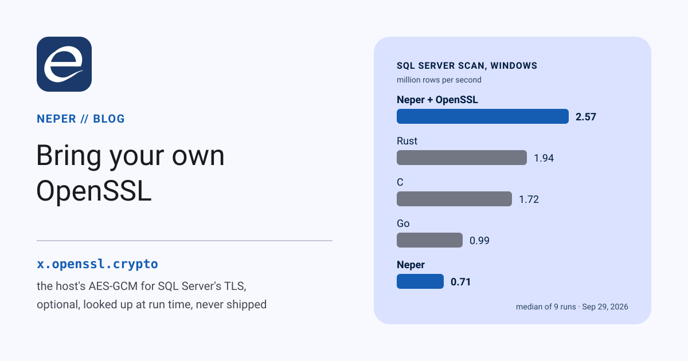
Bring your own OpenSSL: SQL Server scans, three times faster Neper's SQL Server driver can hand its TLS record cipher to the host's OpenSSL, looked up at run time and never shipped, while the handshake and certificate checks stay Neper's. Scans get 3.2–3.6 times faster, and on Windows Neper's scan becomes the fastest of Neper, C, Go and Rust. Read the post →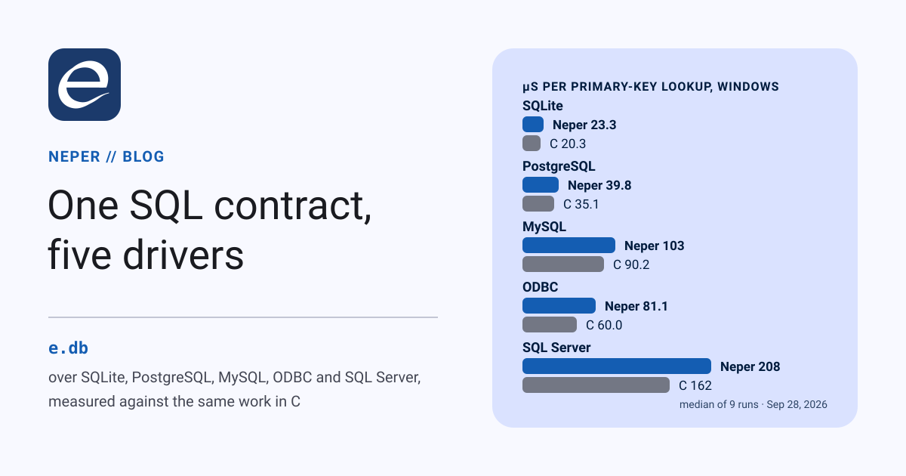
One SQL contract, five drivers How e.db works, how to write a driver, and what differs between SQLite, PostgreSQL, MySQL, ODBC and SQL Server, whose TDS protocol Neper speaks itself inside TLS 1.3 — then the same workload in Neper, C, Go and Rust on Windows and Linux. C wins, Rust is second, Neper third ahead of Go, and scans are still where Neper loses. Read the post →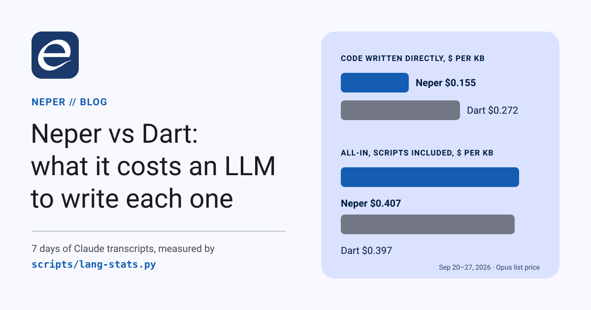
Neper vs Dart: what it costs an LLM to write each one Seven days of Claude transcripts, measured byte by byte. The same cost per KB, 43% cheaper direct edits and more first-try builds for Neper — and 2.2× the context, which is what we fix next. Read the post →